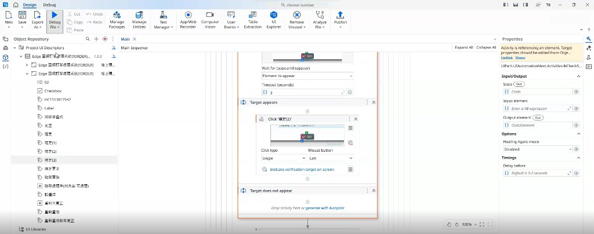

Project 1: Telemarketing Case Automated Processing System
Pain Points
Handling daily mobile contract renewal cases required significant manpower. The workflow was highly repetitive and demanded intense focus to avoid human errors and potential customer complaints.
Project Results
Independently developed 3 types of automated processing tools covering 57% of total case volume. Saved up to 198 operational hours monthly for the New Taipei branch while maintaining a stable accuracy rate of 95%.
System Workflow & Architecture
Data Extraction & Classification (TMS System)
Automatically logs into the TMS system to retrieve pending lists and customer details, utilizes regular expressions for logical classification, and outputs structured JSON data.
Cross-System Automation (mBMS System)
Triggers corresponding automation scripts based on case types: (A) NP operations, automatically selecting equivalent 5G plans; (B) Adding main plans automatically based on JSON data; (C) Removing value-added services.
Result Validation & Reporting
Extracts the order numbers generated upon successful processing, automatically pauses and tags cases blocked by system constraints, and outputs execution result lists and exception summary reports.
Note: Due to customer privacy concerns regarding the system interface, demonstration videos are not displayed on the webpage. I would be happy to showcase them in person during an interview!
Project 2: Exception Case Automated Resubmission Workflow
Pain Points
Hundreds to thousands of exception cases requiring workflow resubmissions irregularly occurred each month. Relying on manual, case-by-case system checks and resubmissions consumed 3 to 6 hours each time, severely draining team resources.
Project Results
Independently developed an automated resubmission tool using UiPath, consistently eliminating 3 to 18 hours of highly repetitive manual labor per month and significantly easing the team's workload.
System Workflow & UiPath Architecture
Data List Reading
Reads local TXT files to retrieve all pending phone numbers and stores them in an array loop.
System Status Detection
Queries the system case-by-case to extract order status. If the status includes "Exception Case Processing", it triggers the resubmission action; otherwise, it automatically returns to the query homepage.
UI Automated Resubmission
Automatically clicks the "Correct" and submit buttons, integrating UI element detection logic to dynamically and stably handle various randomly appearing system confirmation pop-ups, ensuring uninterrupted workflows.

UiPath Design
Note: Due to customer privacy concerns regarding the system interface, demonstration videos are not displayed on the webpage. I would be happy to showcase them in person during an interview!
Project 3: Telemarketing Case Remark Text Reduction Tool
Pain Points
The system's remark length is strictly limited to 200 bytes; exceeding this limit will cause processing failures. Operational staff spent excessive time and mental effort manually trimming words daily.
Project Results
Developed a resident text cleaning tool. Perfectly resolved system error issues, saving an estimated 14.5 hours of manual text editing per month for the center, greatly optimizing the operational experience.
🎮 Project 4: Mini Project - Animal Dash Fight
An interactive web mini-game developed using GOOGLE AI STUDIO and rendered in HTML. Implemented collision detection, character switching, and a high-score tracking mechanism.
Play Now